Jobsheet-8: - Reactives Form
Praktikum – Bagian 1: Building a Bootstrap Form
- Buat component baru dengan nama signup-form dengan perintah ng g c signup-form
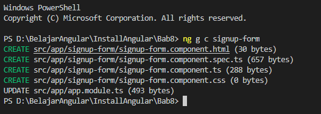
- Modifikasi app.component.html menjadi seperti berikut:
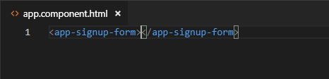
- Modifikasi file signup-form.component.html menjadi seperti berikut:
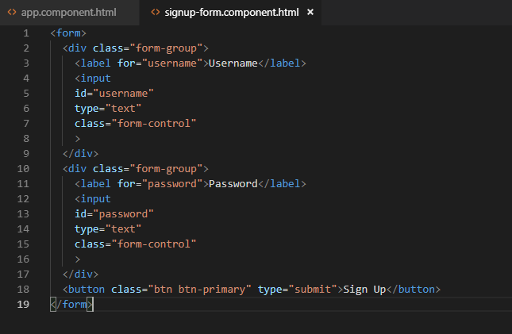
- Jalankan dan Catat hasilnya
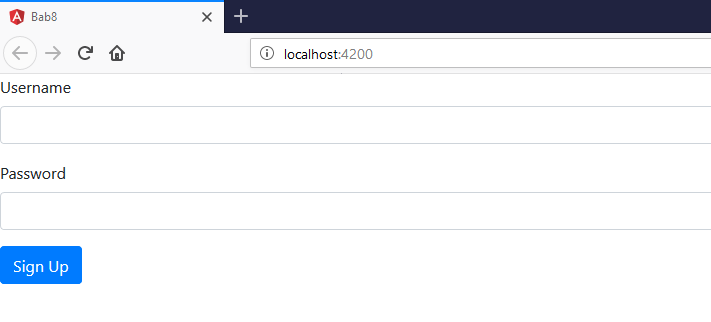
Praktikum – Bagian 2: Control Programmatically
- Modifikasi file signup-form.component.ts seperti dibawah ini:
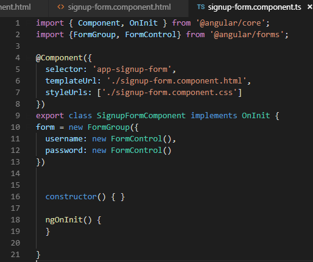
- Modifikasi signup-form.component.html menjadi seperti berikut:
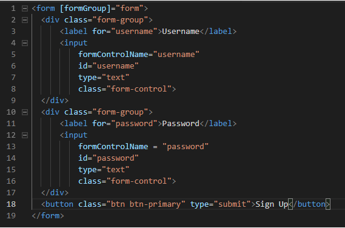
- Jalankan dan Catat hasil inspect elemen pada bagian console
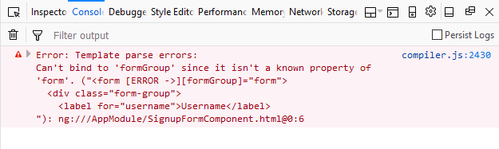
- Modifikasi file app.module.ts tambahkan kode berikut:
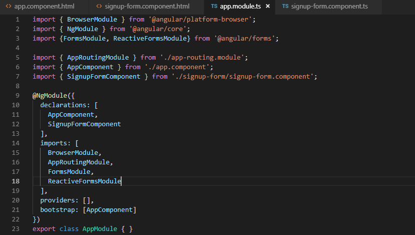
- Jalankan dan Catat hasilnya di bagian console pada browser
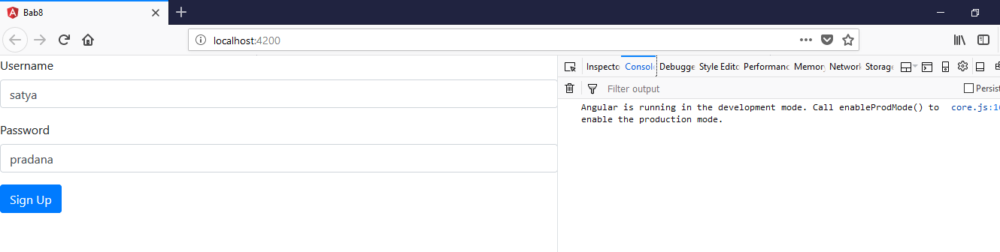
Praktikum - Bagian 3: Adding Validation
- Modifikasi signup-form.component.ts menjadi seperti berikut:
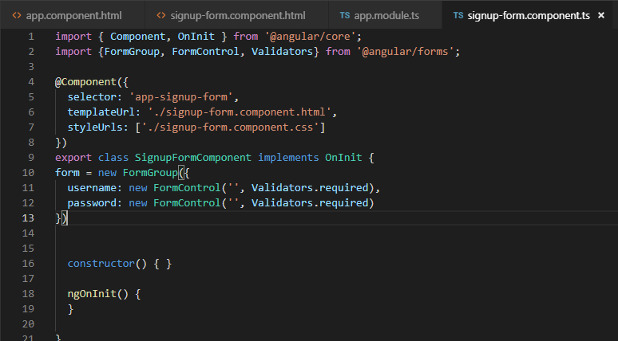
- Modifikasi signup-form.component.html menjadi seperti berikut:
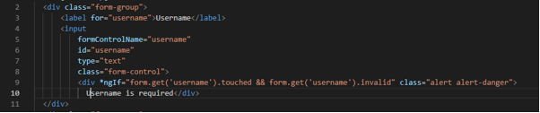
- Jalankan, apakah validasi formnya berfungsi dan Catat hasilnya
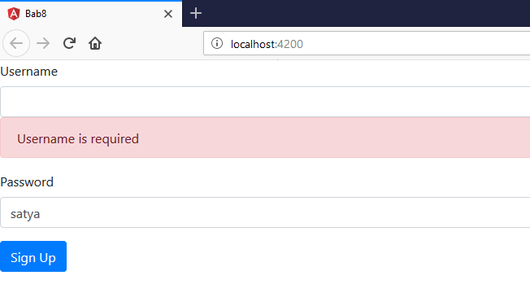
- Tambahkan get username pada file signup-form.component.ts seperti berikut:
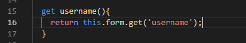
- Modifikasi file signup-form.component.html menjadi seperti berikut:
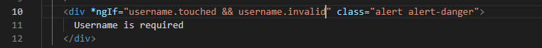
- Jalankan dan Catat hasilnya
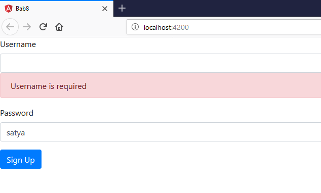
Praktikum - Bagian 4: Specific Validation Errors
- Modifikasi signup-form.component.ts menjadi seperti berikut:
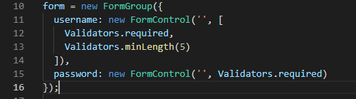
- Modifikasi signup-form.component.html menjadi seperti berikut:
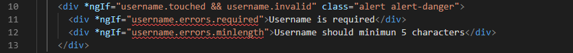
- Jalankan dan Catat hasilnya
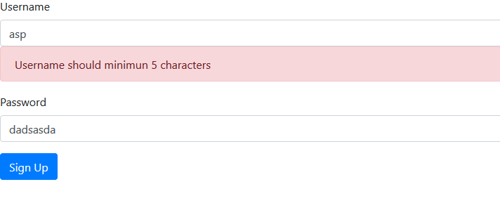
- Modifikasi signup-form.component.html menjadi seperti berikut:
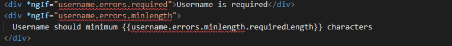
- Jalankan dan Catat hasilnya
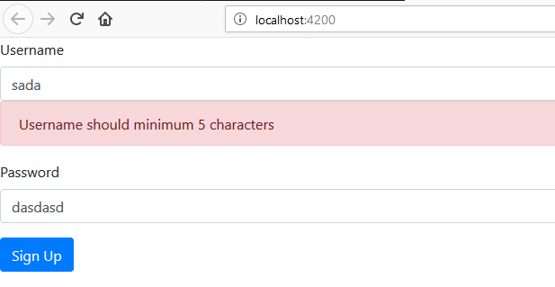
Praktikum - Bagian 5: Custome Validation
- Buat file baru pada folder signup-form dengan nama username.validators.ts dan isi dengan script sebagai berikut:
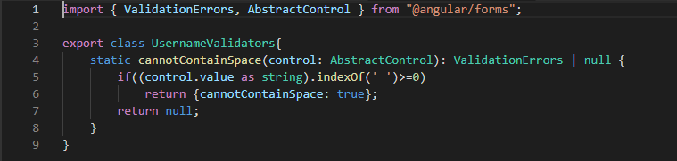
- Modifikasi signup-form.component.ts menjadi seperti berikut:
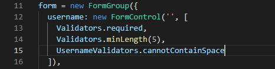
- Modifikasi signup-form.component.html menjadi seperti berikut:
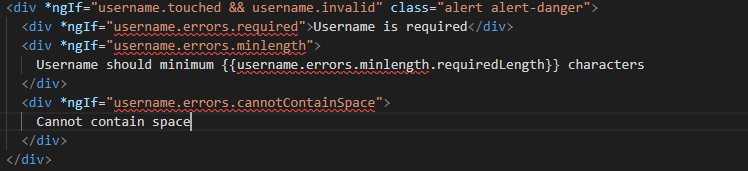
- Jalankan dan Catat hasilnya
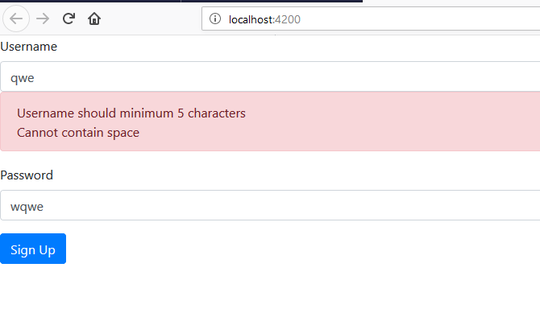
Praktikum - Bagian 6: Asyncronus Validation
- Modifikas file username.validators.ts seperti berikut:
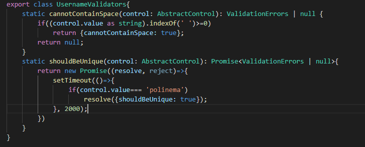
- Modifikasi signup-form.component.ts menjadi seperti berikut:
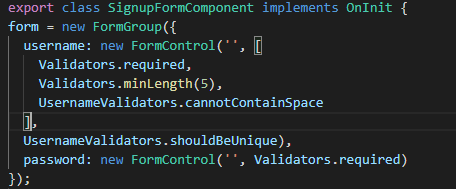
- Modifikasi signup-form.component.html, tambahkan seperti berikut:
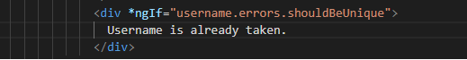
- Jalankan dan Catat hasilnya
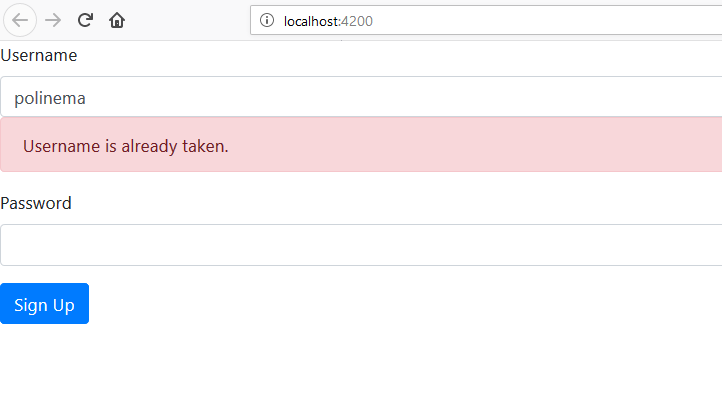
Praktikum - Bagian 7: Displaying a Loader Image
- Modifikasi signup-form.component.html, tambahkan seperti berikut:
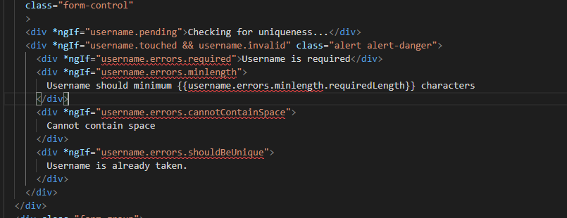
- Jalankan dan Catat hasilnya
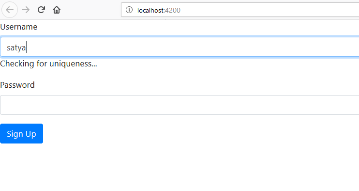
Praktikum - Bagian 8: Validating Form on Submit
- Modifikasi signup-form.component.ts, dengan menambahkan method login() seperti berikut:
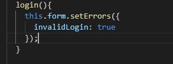
- Modifikasi signup-form.component.html seperti berikut:
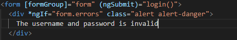
- Jalankan dan Catat hasilnya
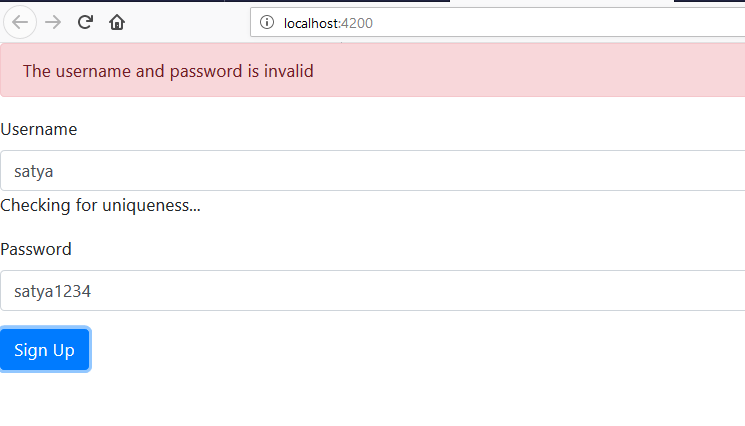